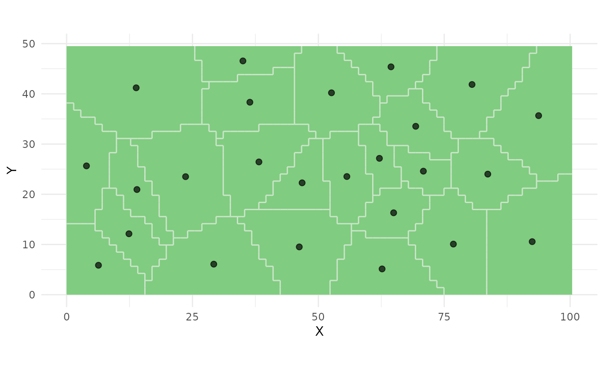

Introduction to soilsampling
soilsampling Package Authors
2025-12-25
Source:vignettes/introduction.Rmd
introduction.RmdOverview
The soilsampling package provides methods for designing soil sampling schemes, including:
- Simple Random Sampling: Uniform random selection of sampling locations
- Stratified Random Sampling: Random sampling within compact geographical strata
- Spatial Coverage Sampling: Purposive sampling at stratum centroids for optimal coverage
- Maxvol Optimal Design: D-optimal design using maximum volume criterion
- Composite Sampling: Sampling from equal-area strata for combined samples
The package uses sf for spatial operations and implements pure R algorithms, requiring no Java or additional GIS software.
Installation
# Install from local source
install.packages(".", repos = NULL, type = "source")
# Or using devtools
devtools::install()Quick Start
library(soilsampling)
library(sf)
# Create a study area
poly <- st_polygon(list(rbind(
c(0, 0), c(100, 0), c(100, 50), c(0, 50), c(0, 0)
)))
study_area <- st_sf(geometry = st_sfc(poly))Spatial Coverage Sampling
# Set seed for reproducibility
set.seed(42)
# Create spatial coverage sampling design
samples_coverage <- ss_coverage(study_area, n_strata = 25, n_try = 5)
# View summary
print(samples_coverage)
#> Spatial Coverage Sampling
#> =========================
#> Number of samples: 25
#> Number of strata: 25
# Plot
ss_plot(samples_coverage)
Exporting Results
As Data Frame
# Get coordinates as data frame
coords <- ss_to_data_frame(samples_coverage)
head(coords)
#> sample_id stratum_id is_prior X Y
#> 1 1 1 FALSE 35.02039 46.55740
#> 2 2 2 FALSE 55.66225 23.53371
#> 3 3 3 FALSE 46.77691 22.27986
#> 4 4 4 FALSE 62.12984 27.15672
#> 5 5 5 FALSE 92.47119 10.56665
#> 6 6 6 FALSE 52.60995 40.20839As CSV
# Export to CSV
write.csv(coords, "sampling_points.csv", row.names = FALSE)Working with Real Data
In practice, you would load a study area from a shapefile:
# Read study area from shapefile
study_area <- st_read("path/to/study_area.shp")
# Create sampling design
set.seed(42)
samples <- ss_coverage(study_area, n_strata = 50, n_try = 10)
# Export coordinates
coords <- ss_to_data_frame(samples)
write.csv(coords, "field_sampling_points.csv", row.names = FALSE)When to Use Each Method
| Method | Best For | Inference Type | Key Features |
|---|---|---|---|
ss_coverage() |
Interpolation (kriging) | Model-based | Optimal spatial coverage |
ss_stratified() |
Estimating means/totals | Design-based | Valid probability sample |
ss_random() |
Simple design-based analysis | Design-based | Unbiased estimates |
ss_maxvol() |
Optimal feature coverage | Model-based | D-optimal design |
ss_composite() |
Reducing laboratory costs | Design-based | Combined samples |
Sampling Methods Comparison
Design-Based vs Model-Based
Design-based sampling (e.g.,
ss_random(), ss_stratified()): - Uses
probability sampling - Statistical inference based on sampling design -
Valid for design-based estimation (means, totals) - No assumptions about
spatial autocorrelation required
Model-based sampling (e.g.,
ss_coverage(), ss_maxvol()): - Purposive
(non-random) sample selection - Requires spatial model for inference
(e.g., kriging) - Optimal for prediction and interpolation - More
efficient for mapping applications
Tips for Best Results
-
Use multiple tries: Set
n_try = 10or higher to avoid local optima in k-means algorithms -
Set a seed: Use
set.seed()for reproducible results -
Adjust resolution: Use
n_cellsparameter to control grid density -
Check convergence: The output includes a
convergedflag -
Consider prior information: Use
prior_pointsto incorporate existing sample locations
Getting Help
For more detailed information on specific methods, see:
-
vignette("spatial-coverage")- Spatial coverage sampling methods -
vignette("maxvol-sampling")- Maxvol optimal design sampling -
?ss_stratify- Help on stratification -
?ss_coverage- Help on coverage sampling -
?ss_maxvol- Help on maxvol sampling
References
de Gruijter, J.J., Brus, D.J., Bierkens, M.F.P., and Knotters, M. (2006). Sampling for Natural Resource Monitoring. Springer, Berlin.
Walvoort, D.J.J., Brus, D.J., and de Gruijter, J.J. (2010). An R package for spatial coverage sampling and random sampling from compact geographical strata by k-means. Computers & Geosciences 36, 1261-1267.
Petrovskaia, A., Ryzhakov, G., & Oseledets, I. (2021). Optimal soil sampling design based on the maxvol algorithm. Geoderma, 383, 114733.